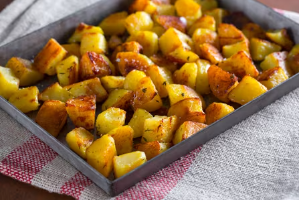

RICETTA PATATE AL FORNO
ingredienti:
-Patete
-Olio
-Timo
-Aglio
-Sale fino
-Rosmarino
-Pepe nero
procedura:
-Per preparare le patate al forno come prima cosa lavatele bene
-Sbucciatele
-Dividete le patate a metà per il senso della lunghezza
-Da queste ricavate dei cubetti grandi un paio di cm
-Sbollentatele per 7 minuti quindi scolatele e trasferitele nuovamente in una ciotola .
Aromatizzate con le foglioline di timo .
-Aggiungete sale, pepe, olio e mescolate bene con un cucchiaio.
-Trasferite le patate in una teglia di alluminio dai bordi bassi precedentemente unta.
Agigungete dei rametti di rosmarino e due spicchi d'aglio. Cuocete le patate in forno ventilato preriscaldato a 220°, nel ripiano centrale, per 40 minuti o fino a quando le patate non risulteranno ben dorate.
A metà cottura si raccomanda di mescolare delicatamente le patate per una doratura uniforme. A cottura ultimata sfornate le vostre patate al forno, togliete gli spicchi d'aglio e servitele.
